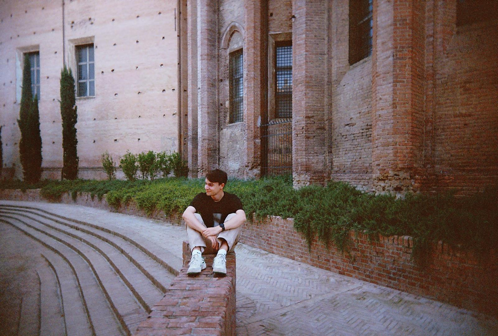

About Me.
I am a Computer Engineering student dedicated to building scalable software systems and leading impactful community initiatives.

Professional Background
Currently completing my final year of the Computer Engineering Bachelor's program at Alma Mater Studiorum - University of Bologna. My academic focus encompasses systems architecture, operating systems, and network protocols, ensuring a rigorous approach to software development.
Beyond the technical sphere, I have actively cultivated leadership and organizational capabilities through years of scouting and extensive volunteer work. This dual perspective has taught me that the most effective engineering solutions seamlessly combine technical excellence with practical, human-centric project management.
Technical Proficiencies
Core Competencies
Experience & Education
B.Sc. Computer Engineering
Alma Mater Studiorum - University of Bologna
Scout Leader & Logistics Manager
AGESCI Arezzo 2. Responsible for orchestrating logistics, directing team dynamics, and executing educational programs for youth development.
Volunteer Facilitator
Circolo Arcobaleno - AIPD Arezzo. Led recreational and educational initiatives to support individuals with Down Syndrome, fostering social integration.
High School Diploma (Scientific Curriculum)
Liceo Scientifico "F. Redi", Arezzo, Italy.